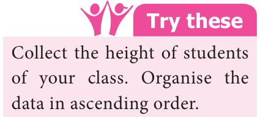

- We have come across situtations where we use the term 'average' in our day-to-day life. Consider the following statements.
- The average temperature at Chennai in the month of May is \(40 ^{\circ} c\).
- The average marks in mathematics unit test of class VI is 74.
- Mala's average study time is 4 hours.
- Mathan's average pocket money per week is ₹100. We come across many more statements of such kind in our daily life. Let us take
the example, "the average marks scored by class VI students in maths test is 74". Does it mean that every student has scored 74? No, certainly not. Some students would have got more than 74 and some students would have got less than 74. Average is the value that represents the general performance of class VI students in maths test.

Similarly, \(40 ^{\circ} c\) is the representative temperature of Chennai in the month of May
which does not mean that everyday temperature is \(40 ^{\circ} c\) in the month of May. Since the average lies between the highest and the lowest value of the given data, we say average is a measure of central tendency of the group of data. Different forms of data need different forms of representative or central value to describe it. We study three types of central